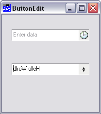

| Parents | Children | Properties | Methods | Events |
| Purpose: | Allows user to enter or edit data. |
Description
The ButtonEdit object combines a single-line input field with a customisable button. It provides the same user and programmer interfaces as an Edit object (Style 'Single').
The appearance of the button, which is displayed to the right of the input field, is determined by the ImageListObj property. When clicked, the object generates a DropDown event. There is no default processing for this event; it is up to the programmer to take the appropriate action via a callback function.
The following picture illustrates two ButtonEdit objects
∇ Example;BK;White
[1] 'F'⎕WC'Form' 'ButtonEdit'
[2] 'F.IL1'⎕WC'ImageList'('Size' 16 16)('Masked' 1)
[3] 'F.IL1.Time'⎕WC'Icon' 'c:\MadCap13.2\ICO\Time.ico'
[4] 'F.BE1'⎕WC'ButtonEdit' ''(30 20)(⍬ 160)
[5] F.BE1.(Cue ShowCueWhenFocused)←'Enter data' 1
[6] F.BE1.(ImageListObj ImageIndex)←F.IL1 1
[7]
[8] 'F.fnt'⎕WC'Font' 'APL385 Unicode' 16
[9] BK←16 16⍴256⊥White←255 255 255
[10] 'F.Rotate'⎕WC'Bitmap'('CBits'BK)('MaskCol'White)
[11] 'F.Rotate.'⎕WC'Text' '⌽'(0 3)('FontObj'F.fnt)
[12] BK←F.Rotate.CBits
[13] 'F.IL1.'⎕WC'BitMap'('CBits'BK)('MaskCol'White)
[14] 'F.BE2'⎕WC'ButtonEdit' 'Hello World'(100 20)(⍬ 160)
[15] F.BE2.(ImageListObj ImageIndex)←F.IL1 2
[16] F.BE2.onDropDown←'Rotate'
∇
∇ Rotate msg
[1] (⊃msg).Text←⌽(⊃msg).Text
∇
